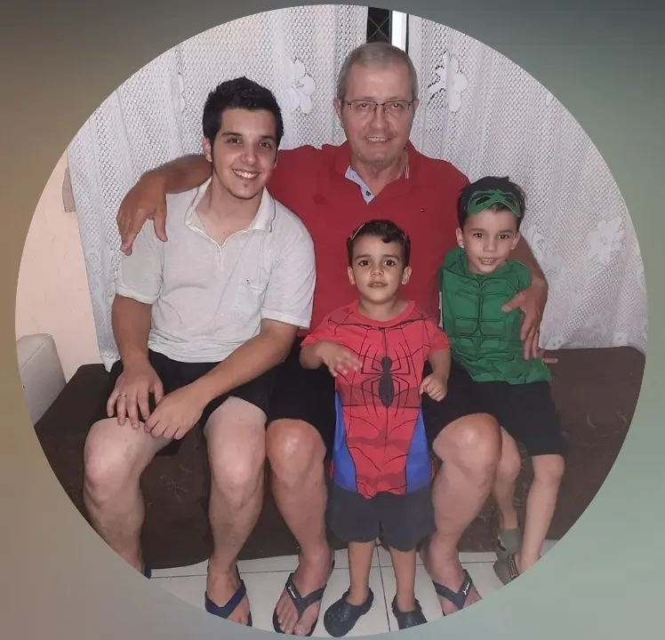
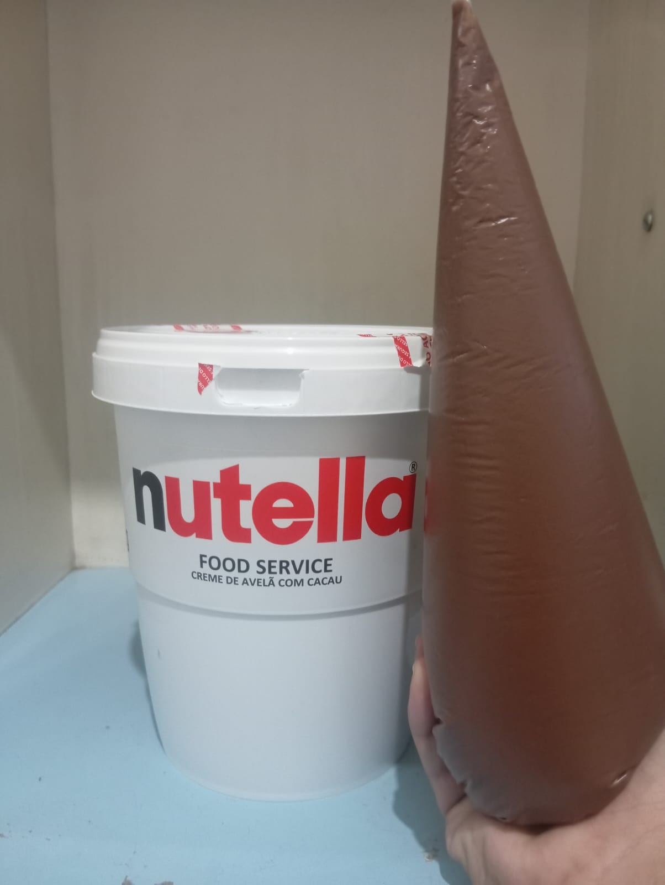
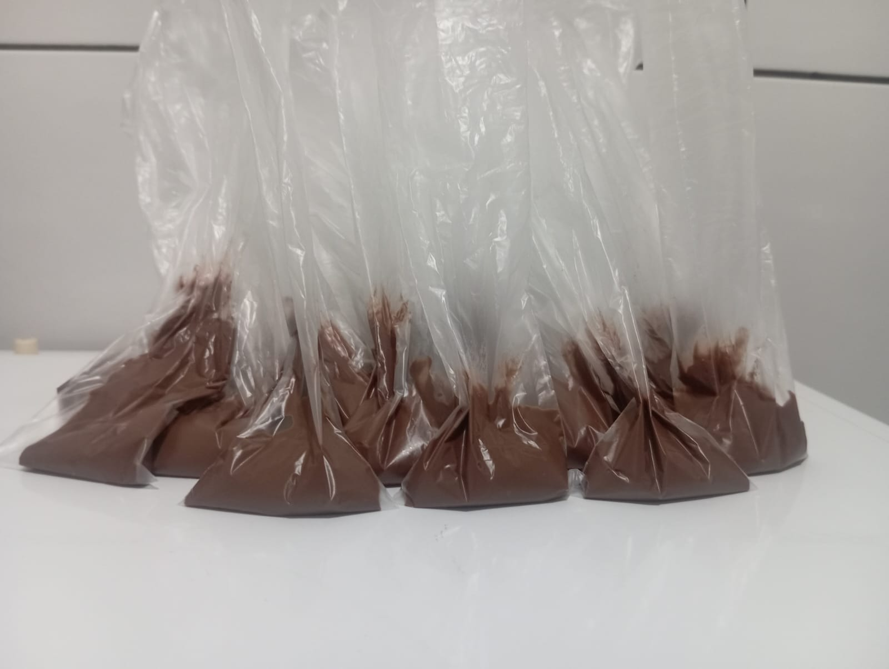
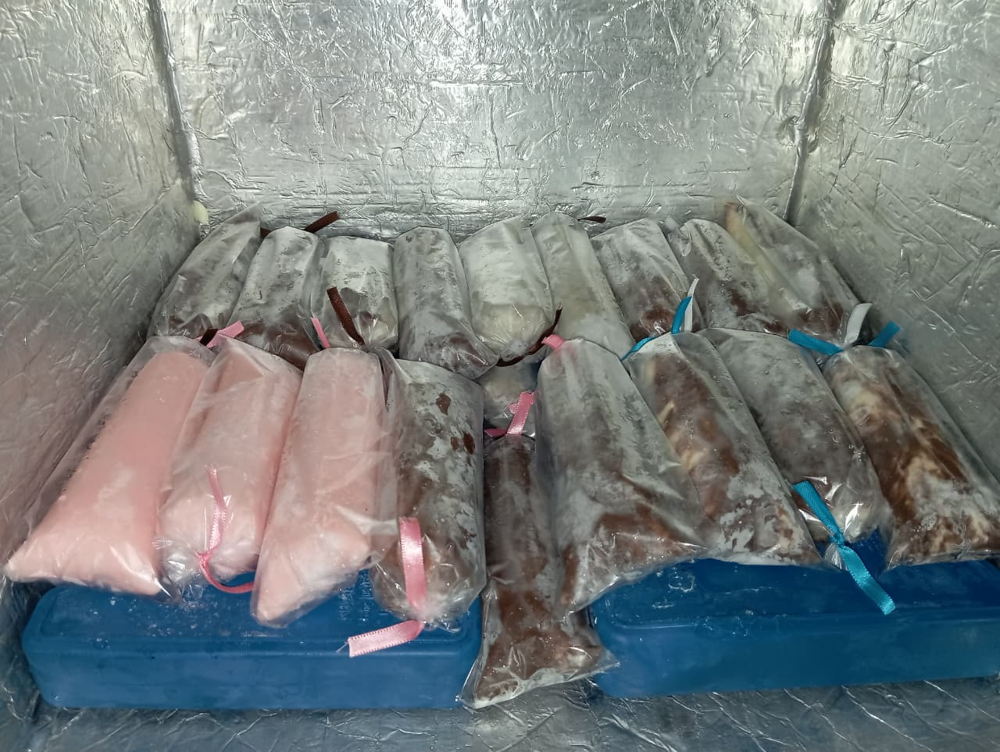

Conheça nossa história
"Paulista"
Esse é meu pai! O "paulista", como era conhecido por BH e região. A inspiração para criar essa marca. Ele me aconselhou um dia, devido aos péssimos salários que pagam aqui no Brasil, a ter um empreendimento próprio, para ter maiores possibilidades de crescimento.

Inicio da trajetória
Infelizmente, quando ele veio a falecer, foi um periodo muito dificil pra mim, então segui o conselho dele, e cá estou. Sou o Pierre, 28 anos, estudante de TI, na busca de vencer na vida. Sempre gostei de fazer doces, então comecei a pesquisar sobre venda de doces na internet.

Produto
Achei vários tipos de doces, mas o geladinho gourmet foi a melhor opção devido a conseguir produzir em grande escala com um vencimento de pelo menos 2 mêses sem riscos de perder a qualidade.E então, fui pesquisar as receitas existentes na internet de geladinho.

Receita Final
Existem muitas receitas na internet, mas não gostei de nenhuma, então decidi criar a minha, para ter um sabor exclusivo. Consegui entender o que cada ingrediente faria ou não com o geladinho, e criei minha propria receita. E como eu nunca trabalhei com vendas, a dúvida agora era, como vender esse produto ?

Vieira's Gourmet
Acabei esquecendo de dizer que o Vieira's Gourmet tem esse nome pois o sobrenome do meu pai era Vieira, então coloquei para homenagea-lo. E sobre as vendas, graças a Deus todo mundo gosta, elogia. Começei vendendo aos meus amigos, e agora estou tentando expandir para escolas e comercios.